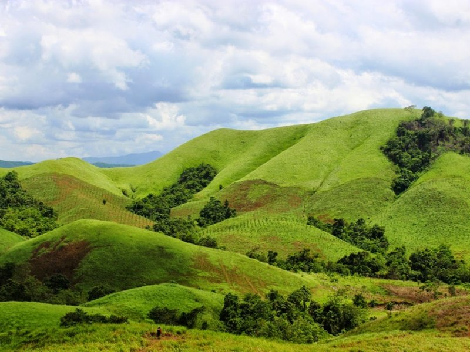
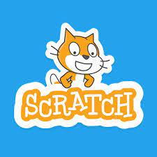

20-01-2023 , oleh: Ani Nur

Cerita perjalanan waktu mendaki Gunung Semeru ini sudah beberapa tahun silam. Saya ga sampai ke Puncak Mahameru walau tinggal beberapa ratus langkah lagi (mungkin). “You’re closer than you think” kalau kata pembaca yang komentar dibawah. Meski begitu, kenangan tiap jengkal
perjalanannya saya ingat dan begitu membekas di hati saya hingga saat ini. Makanya mau di share lagi.
Ya, dalam beberapa hari berikutnya, saya dan teman-teman di komunitas Backpacker Indonesia akan melakukan pendakian ke Gunung Semeru yang merupakan gunung tertinggi di Pulau Jawa. Tinggi Gunung Semeru yang mencapai 3676 mdpl, sudah cukup membuat jantung saya berdegub kencang saat
membayangkan tingginya. Ya, dalam beberapa hari berikutnya, saya dan teman-teman di komunitas Backpacker Indonesia akan melakukan pendakian ke Gunung Semeru yang merupakan gunung tertinggi di Pulau Jawa. Tinggi Gunung Semeru yang mencapai 3676 mdpl, sudah cukup membuat jantung saya
berdegub kencang saat membayangkan tingginya.
20-01-2023 , oleh: Ani Nur

Apa Itu Scratch? Scratch adalah bahasa pemrograman berbasis visual yang interaktif dan fun. Dengan Scratch kita bisa membuat animasi, permainan, dan kreasi menarik yang lain. Scratch memudahkan programmer dalam membuat program tanpa perlu khawatir dengan penulisan sintaksis karena
tidak perlu menulis kode. Hanya dengan drag and drop blok blok kode yang sudah disediakan kemudian disusun dan membentuk sebuah logika yang bisa dijalankan sehingga menjadi program.
nah berikut contoh tutorial belajar scratch :